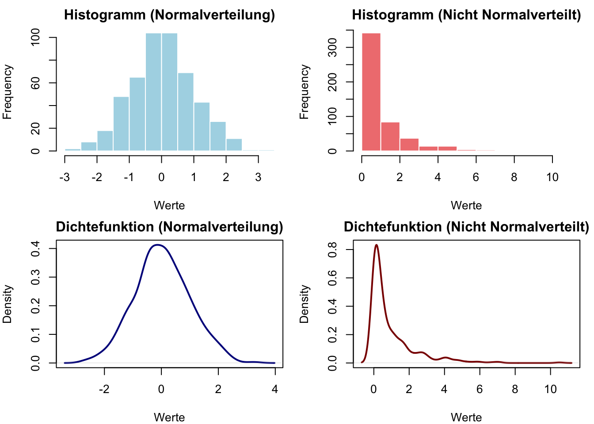
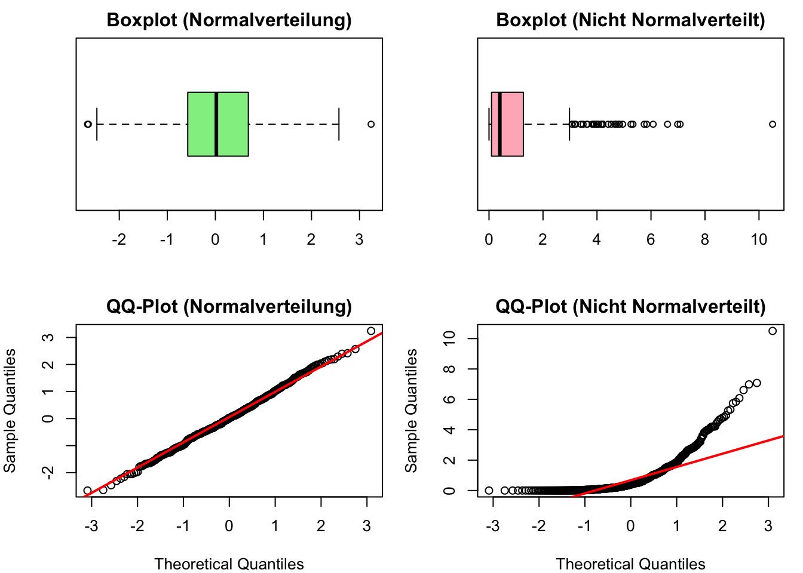
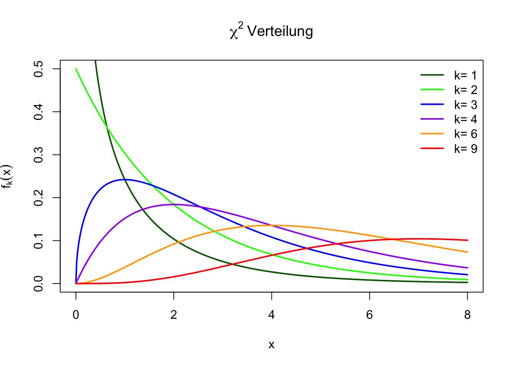

Code
p <- pt(-0.71, df = 4) * 2 # 2 * weil zweiseitig
p[1] 0.5169039Statistische Tests sind essenziell, um Hypothesen über Daten zu überprüfen.
Der Standardfehler ist ein Mass für die Genauigkeit eines Schätzers. Er ist definiert als die Standardabweichung der Schätzfunktion.
\[ s_{\bar{x}} = \sqrt{\frac{s^2}{n}} \]
Wo \(s_{\bar{x}}\) der Standardfehler des Mittelwerts ist, \(s^2\) die Varianz der Stichprobe und \(n\) die Anzahl der Beobachtungen.
D.h. der Standardfehler ist gross, wenn die Varianz gross ist und/oder die Stichprobe klein ist.
Die Standardfehler sind dank dem zentralen Grenzwertsatz normalverteilt.
Beim Start zum Engadiner Skimarathon wird ein Bus vermisst. Bei der Suche findest du einen Parkplatz einen Bus. Du schaust in den Bus und stellt fest, dass das durchschnittliche Alter der Personen vermutlich bei ca. 80 Jahren liegt.
Die Teilnehmer am Skimarathon haben ein mittleres Alter von 40 Jahren mit einer Standardabweichung von 10 Jahren, wobei wir annehmen, dass die Alter ungefähr normalverteilt ist.
Der Standardfehler misst nun die Genauigkeit des Schätzers, also wie genau der Mittelwert der Stichprobe den Mittelwert der Population schätzt.
Im gefundenen Bus befinden sich 50 Personen mit einem durchschnittlichen Alter von 80 Jahren.
Der Standardfehler des Mittelwerts beträgt:
\[ s_{\bar{x}} = \sqrt{\frac{s^2}{n}} = \sqrt{\frac{10^2}{50}} = \sqrt{2} \approx 1.41 \text{ Jahre} \]
Die Differenz zwischen dem Mittelwert der Stichprobe und dem Mittelwert der Population beträgt 40 Jahre, und ist damit grösser als 28 Standardfehler.
Aus der Normalverteilung können wir also schliessen, dass der Bus mit 99.9% Wahrscheinlichkeit nicht die Teilnehmer des Skimarathons enthält.
Eine Hypothese ist eine testbare Aussage über eine Population. In der Statistik gibt es zwei Hauptarten von Hypothesen:
Die Nullhypothese postuliert, dass es keinen Effekt oder Unterschied gibt. Zum Beispiel könnte H₀ aussagen, dass es keinen Unterschied zwischen den Mittelwerten zweier Gruppen gibt.
Die Alternativhypothese widerspricht der Nullhypothese und postuliert, dass es einen Effekt oder Unterschied gibt. Alternativhypothesen können einseitig (z.B. \(H_1: \mu > \mu_0\)) oder zweiseitig (z.B. \(H_1: \mu \neq \mu_0\)) sein.
Hypothesen aufstellen
Signifikanzniveau \(\alpha\) festlegen
Stichprobe erheben
Teststatistik berechnen
\[ t = \frac{\bar{x} - \mu_0}{s_{\bar{x}}} \]
p-Wert bestimmen und Entscheidung treffen
1. Hypothesen aufstellen
Schauen wir uns das Beispiel aus Kapitel 7.1.2.1.1 an. Wir haben eine Stichprobe von 5 Studierenden und ihre Prüfungsnoten (Skala 0–100).
Wir wollen testen, ob der Mittelwert der Grundgesamtheit 75 ist.
Die Null- und Alternativhypothesen lauten:
\[ H_0: \widehat{\bar{Y}} = 75 \quad \text{(kein Unterschied, Mittelwert entspricht 75)} \]
\[ H_1: \widehat{\bar{Y}} \neq 75 \quad \text{(es gibt eine Abweichung)} \]
Anmerkung zur Notation
Wir kennzeichnen Schätzungen mit einem Dach \(\widehat{X}\).
\(\widehat{\bar{Y}} = 75\) bedeutet also, dass wir den Mittelwert der Variable \(Y\) auf 75 schätzen.
Wir halten zudem fest, dass wir einen zweiseitigen Test durchführen, da wir keine Richtung der Abweichung vorgeben.
2. Signifikanzniveau \(\alpha\) festlegen
Wir entscheiden uns für ein übliches Signifikanzniveau:
\[ \alpha = 0.05 \]
Das bedeutet:
3. Stichprobe erheben
Wir übernehmen die Daten aus Tabelle 7.1 welche die Noten von 5 Studierenden enthält.
Berechnung der Kennwerte
\[ \bar{Y} = 70 \]
\[ \sigma_Y = 15.81 \]
Standardfehler des Mittelwerts:
\[ \begin{aligned} s_{\bar{Y}} &= \frac{\sigma_Y}{\sqrt{n}} \\ &= \frac{15.81}{\sqrt{5}} \\ &\approx 7.07 \end{aligned} \]
4. Teststatistik berechnen
Nun berechnen wir den t-Wert mit der Formel:
\[ \begin{aligned} t &= \frac{\bar{Y} - \widehat{\bar{Y}}}{s_{\bar{Y}}} \\ &= \frac{70 - 75}{7.07} \\ &= \frac{-5}{7.07} \\ &\approx -0.71 \end{aligned} \]
5. p-Wert bestimmen und Entscheidung treffen
Der p-Wert wird aus der t-Verteilung mit \(df = n - 1 = 4\) Freiheitsgraden berechnet:
\[ p = 2 \times (1 - P(T \leq |t|)) \]
Wir machen das in R:
p <- pt(-0.71, df = 4) * 2 # 2 * weil zweiseitig
p[1] 0.5169039\[ p \approx 0.519 \]
Ergebnis:
Ein t-Test ist ein statistischer Test, der oft genutzt wird, um Mittelwerte zu vergleichen oder einen Mittelwert mit einem Referenzwert zu prüfen. Beispielsweise kannst du testen, ob das Durchschnittsgewicht einer Stichprobe signifikant von 70 kg abweicht (\(H_0: \mu = 70\)).
Voraussetzung ist, dass die Daten metrisch, ohne Ausreisser und symetrisch verteilt sind.
Der Kern des t-Tests:
Ein typisches Beispiel ist der Zweistichproben-t-Test (unabhängige Gruppen), bei dem untersucht wird, ob sich zwei Mittelwerte (z.B. Gruppe A vs. Gruppe B) signifikant unterscheiden.
\[ p = 2 \times (1 - P(T \leq |t|)) \]
Oder vereinfacht:
Beide Werte gehören zusammen: Ohne t-Wert weisst du nicht, wie stark die Abweichung ist; ohne p-Wert weisst du nicht, wie (un)wahrscheinlich diese Abweichung unter der Nullhypothese wäre.
| Testentscheidung | \(H_0\) nicht ablehnen | \(H_0\) ablehnen |
|---|---|---|
| \(H_0\) wahr | Richtige Entscheidung | Fehler 1. Art |
| \(H_0\) falsch | Fehler 2. Art | Richtige Entscheidung |

Dieser Test ist ein zweiseitiger Test mit \(\alpha = 0.05\). Das führt dazu, dass wir die Quantile so verteilen, dass “unten” 2.5% der Fläche und “oben” 2.5% der Fläche liegen.
Bei einem einseitigen Test wäre \(\alpha = 0.05\) und wir würden die Quantile so verteilen, dass “unten” 5% der Fläche und “oben” 95% der Fläche liegen.
Allgemeine Formel:
Ein \((1 - \alpha)\)-Konfidenzintervall für den Mittelwert wird berechnet mit:
\[ \operatorname{CI}_{(1-\alpha)} = \bar{x} \pm t_{\alpha/2, df} \cdot s_{\bar{x}} \]
wobei:
Nachdem wir in unserem t-Test festgestellt haben, dass wir die Nullhypothese \(H_0: \mu = 75\) nicht ablehnen können, wollen wir nun ein 95%-Konfidenzintervall (CI) für den Mittelwert der Grundgesamtheit bestimmen. Das Konfidenzintervall gibt uns einen Bereich, in dem der wahre Mittelwert mit 95% Wahrscheinlichkeit liegt.
1. Berechnungen für unser Beispiel aus Kapitel 7.1.2.1.1
Gegeben:
| Wert | Berechnung | Ergebnis |
|---|---|---|
| Stichprobe | \(Y = \{70, 80, 50, 90, 60\}\) | |
| Stichprobenmittelwert \(\bar{Y}\) | \(\frac{70+80+50+90+60}{5}\) | 70.00 |
| Stichprobenstandardabweichung \(s\) | \(\sqrt{\frac{\sum (Y_i - \bar{Y})^2}{n-1}}\) | 15.81 |
| Standardfehler \(s_{\bar{Y}}\) | \(\frac{s}{\sqrt{n}}\) | 7.07 |
| Freiheitsgrade \(df\) | \(n-1 = 4\) | 4 |
2. Kritischen t-Wert für \(\alpha = 0.05\) bestimmen
Da wir ein 95%-Konfidenzintervall berechnen, setzen wir:
\[ \alpha = 0.05 \quad \Rightarrow \quad t_{\alpha/2, df=4} \]
Den kritischen t-Wert können wir in R mit qt() berechnen:
alpha <- 0.05
df <- 4
t_crit <- qt(1 - alpha/2, df)
t_crit[1] 2.776445Ergebnis:
\[ t_{\alpha/2,4} = 2.776 \]
3. Konfidenzintervall berechnen
Nun setzen wir alles in die Formel ein:
x_bar <- 70 # Mittelwert der Stichprobe
s_x_bar <- 7.07 # Standardfehler des Mittelwerts
ci_lower <- x_bar - t_crit * s_x_bar
ci_upper <- x_bar + t_crit * s_x_bar
c(ci_lower, ci_upper)[1] 50.37053 89.62947\[ CI_{95\%} = [50.37, 89.63] \]
4. Interpretation
Daumenregel:
\[ \text{Konfidenzintervall} = \text{Stichprobenergebnis} \pm 2 \cdot \text{Standardfehler} \]
Wir stellen auch hier entsprechende Hypothesen auf.
\[ \begin{aligned} H_0: &\text{Daten sind normalverteilt} \\ H_A: &\text{Daten sind nicht normalverteilt} \end{aligned} \]
Dass wir hier mit der \(H_0\) die Normalverteilung testen, ist nicht intuitiv. Aber wir testen hier nicht, ob die Daten normalverteilt sind, sondern ob sie nicht normalverteilt sind. Wenn wir das Gegenteil beweisen wollen, müssen wir das Gegenteil widerlegen.
Eine Normalverteilung kann man nicht beweisen, sondern nur widerlegen.
| Test | Vorteile | Nachteile |
|---|---|---|
| \(\chi^2\)-Test |
|
|
| Kolmogorov-Smirnov-Test |
|
|
| Cramér-von-Mises-Test |
|
|
| Lilliefors-Test |
|
|
| Anderson-Darling-Test |
|
|
| Shapiro-Wilk-Test |
|
|
# Daten generieren
set.seed(123)
normal_data <- rnorm(500) # 500 normalverteilte Zufallszahlen
non_normal_data <- normal_data^2 # quadrierte Zufallszahlen (nicht normalverteilt)
# Shapiro-Wilk-Test für beide Datensätze
shapiro_result_normal <- shapiro.test(normal_data)
shapiro_result_non_normal <- shapiro.test(non_normal_data)
# Shapiro-Wilk-Test für normal_data:
cat("W-Teststatistik:", round(shapiro_result_normal$statistic, 4), "\n")W-Teststatistik: 0.9981 cat("p-Wert:", round(shapiro_result_normal$p.value, 4), "\n")p-Wert: 0.8639 # Shapiro-Wilk-Test für non_normal_data:
cat("W-Teststatistik:", round(shapiro_result_non_normal$statistic, 4), "\n")W-Teststatistik: 0.708 cat("p-Wert:", round(shapiro_result_non_normal$p.value, 4), "\n")p-Wert: 0 if (shapiro_result_normal$p.value > 0.05) {
cat("Die Nullhypothese der Normalverteilung kann nicht verworfen werden. \n`normal_data` ist normalverteilt.\n\n")
} else {
cat("Die Nullhypothese der Normalverteilung wird verworfen. \n`normal_data` ist **nicht** normalverteilt.\n\n")
}Die Nullhypothese der Normalverteilung kann nicht verworfen werden. normal_data ist normalverteilt.
if (shapiro_result_non_normal$p.value > 0.05) {
cat("Die Nullhypothese der Normalverteilung kann nicht verworfen werden. \n`non_normal_data` ist normalverteilt.\n\n")
} else {
cat("Die Nullhypothese der Normalverteilung wird verworfen. \n`non_normal_data` ist **nicht** normalverteilt.\n\n")
}Die Nullhypothese der Normalverteilung wird verworfen. non_normal_data ist nicht normalverteilt.
# Layout für nebeneinanderstehende Plots definieren
par(mfrow = c(2, 2), mar = c(4, 4, 2, 1))
# Histogramm
hist(normal_data,
main = "Histogramm (Normalverteilung)",
xlab = "Werte",
col = "lightblue",
border = "white")
hist(non_normal_data,
main = "Histogramm (Nicht Normalverteilt)",
xlab = "Werte",
col = "lightcoral",
border = "white")
# Dichtefunktion
plot(density(normal_data),
main = "Dichtefunktion (Normalverteilung)",
xlab = "Werte",
col = "darkblue",
lwd = 2)
plot(density(non_normal_data),
main = "Dichtefunktion (Nicht Normalverteilt)",
xlab = "Werte",
col = "darkred",
lwd = 2)
# Boxplot
boxplot(normal_data,
main = "Boxplot (Normalverteilung)",
col = "lightgreen",
horizontal = TRUE)
boxplot(non_normal_data,
main = "Boxplot (Nicht Normalverteilt)",
col = "lightpink",
horizontal = TRUE)
# QQ-Plot
qqnorm(normal_data,
main = "QQ-Plot (Normalverteilung)")
qqline(normal_data, col = "red", lwd = 2)
qqnorm(non_normal_data,
main = "QQ-Plot (Nicht Normalverteilt)")
qqline(non_normal_data, col = "red", lwd = 2)
# Layout zurücksetzen
par(mfrow = c(1, 1))\[ \chi^2 = \sum_{i=1}^{k} \frac{(N_i - n_i)^2}{n_i} \]
# Chi-Quadrat-Verteilung plotten
x <- seq(0, 8, length.out = 500)
df_values <- c(1, 2, 3, 4, 6, 9)
# Farben definieren
colors <- c("darkgreen", "green", "blue", "purple", "orange", "red")
# Plot erstellen
plot(x, dchisq(x, df = 1), type = "l", lwd = 2, col = colors[1],
ylim = c(0, 0.5), xlab = "x", ylab = expression(f[k](x)),
main = expression(chi^2~"Verteilung"))
# Weitere Linien hinzufügen
for (i in 2:length(df_values)) {
lines(x, dchisq(x, df = df_values[i]), col = colors[i], lwd = 2)
}
# Legende hinzufügen
legend("topright", legend = paste("k=", df_values),
col = colors, lwd = 2, bty = "n")